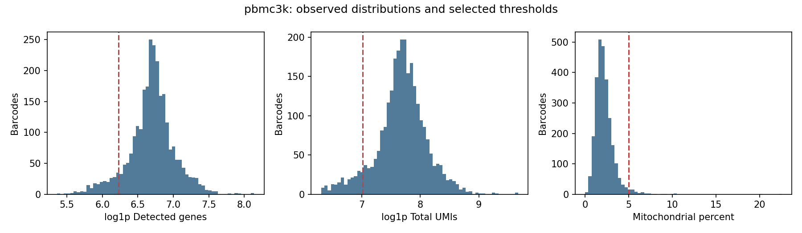

Diana single-cell calibration
Single-cell calibration
Public single-cell post-count analysis · Modal CPU workers · S3 artifacts
Ambient RNA is unassessed because empty-droplet matrices were not provided. Doublet precision/recall is unvalidated. PBMC3k tutorial labels are a same-dataset comparison, not independent truth. Labels are provisional marker hints. Captures/sample proxies are analyzed separately; published breast labels are evaluation only. No donor-level differential expression, malignant-cell validation, or clinical claims.
pbmc3k
2,330 / 2,700 barcodes retained;
110 scDblFinder doublets; 5 clusters.
Seed stability ARI 0.967; tutorial reference ARI 0.842.

Calibration checks: pass
- input_cells_match: pass
- retention: pass
- cluster_count: pass
- finite_embedding: pass
- seed_stability: pass
- raw_counts_preserved: pass
- doublets_called: pass
- reference_overlap: pass
- reference_agreement: pass
Metrics · All barcode decisions ·
Markers · AnnData